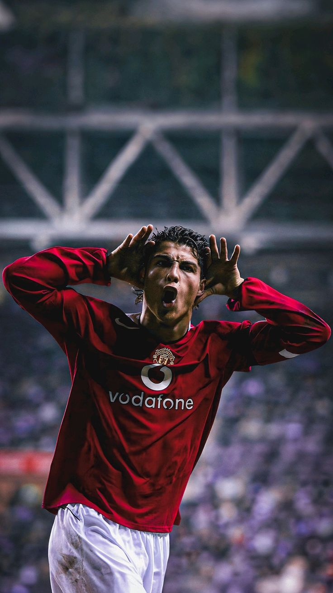
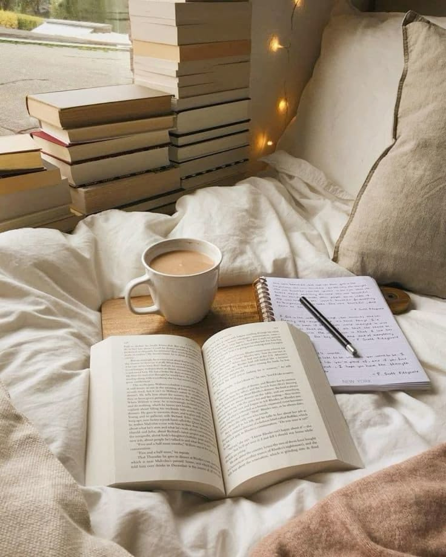
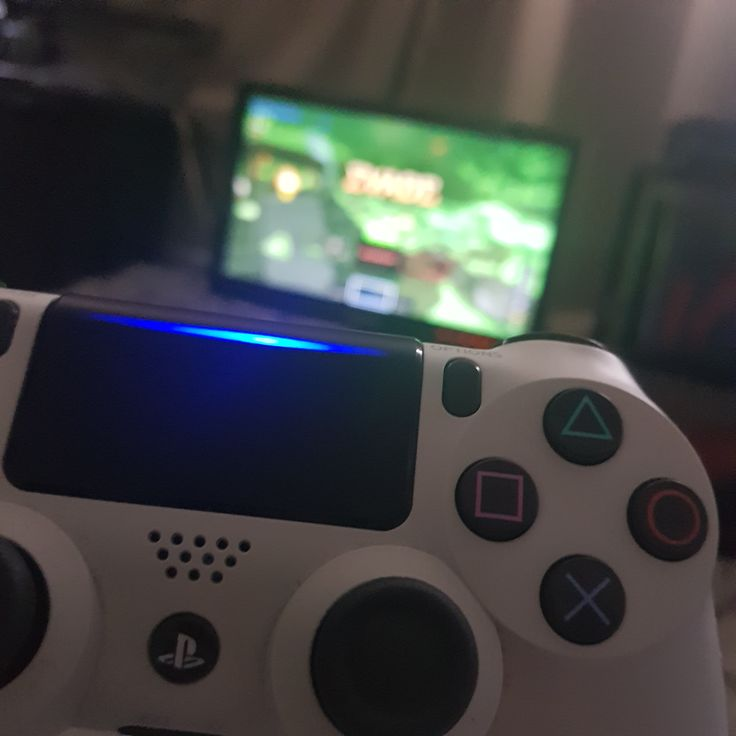

¿Qué es un pasatiempo?
Durante el crecimiento vamos obteniendo diferentes gustos, en los cuales hay ciertas actividades que realizamos más por el gusto que tenemos por ellas; a estas actividades se les llama pasatiempo.

¿Qué es un pasatiempo?
Durante el crecimiento vamos obteniendo diferentes gustos, en los cuales hay ciertas actividades que realizamos más por el gusto que tenemos por ellas; a estas actividades se les llama pasatiempo.
Fútbol
El fútbol es uno de mis pasatiempos porque ha sido el deporte que vi desde mi infancia, al igual que el deporte más jugado en mi barrio.
Leer
Me gusta leer debido a que como me gustaba mucho el anime y había veces en las que el anime no contaba con segunda temporada, decidía ir a ver el manga y, al leer tanto, le empecé a agarrar el gusto, convirtiéndose en uno de mis pasatiempos.
Tocar violín
Tocar violín fue el último pasatiempo adquirido debido a que me gusta una compositora llamada Lindsey Stirling, que toca violín. Así que intenté replicar sus canciones con violín y, conforme tocaba, me seguía gustando más y más.

Jugar videojuegos
Jugar videojuegos es algo que siempre me gustó, pues crecí con consolas a la mano. Formaron gran parte de mi infancia, por lo que les guardo cariño y un gran gusto por jugarlos.
